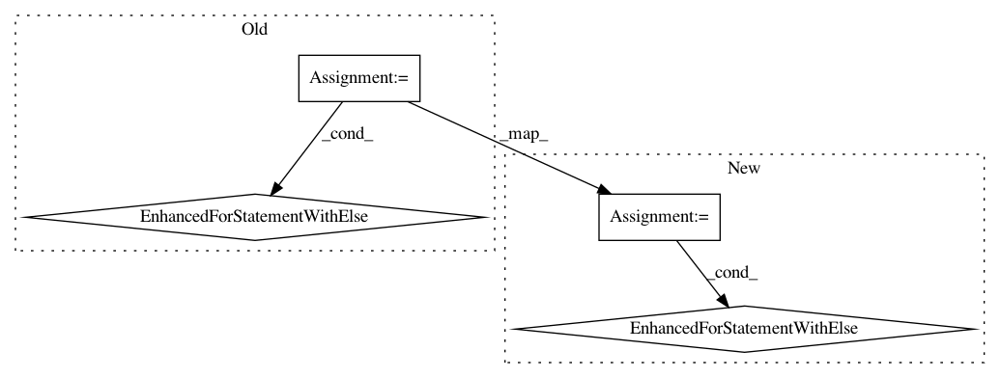

00e8af5760dbb5433702caf2a35daa65789d120c,chaospy/distributions/approximation.py,,approximate_inverse,#Any#Any#Any#Any#Any#Any#Any#,9
Before Change
uupper = 1-qloc
indices = numpy.ones(qloc.shape[-1], dtype=bool)
for idx in range(2*iterations):
// evaluate function:
uloc[:, indices] = (evaluation.evaluate_forward(
distribution, xloc, cache=cache, parameters=parameters)-qloc)[:, indices]
// convergence criteria:
indices[indices] = numpy.any(numpy.abs(xupper-xlower) > tol, 0)[indices]
logger.debug(
"iter: %s : %s : %s (%s)",
numpy.mean(xlower, -1),
numpy.mean(xloc, -1),
numpy.mean(xupper, -1),
numpy.mean(indices),
)
if not numpy.any(indices):
break
// narrow down lower boundary:
ulower[:, indices] = numpy.where(uloc <= 0, uloc, ulower)[:, indices]
xlower[:, indices] = numpy.where(uloc <= 0, xloc, xlower)[:, indices]
// narrow down upper boundary:
uupper[:, indices] = numpy.where(uloc >= 0, uloc, uupper)[:, indices]
xupper[:, indices] = numpy.where(uloc >= 0, xloc, xupper)[:, indices]
// Newton increment every second iteration:
xloc_ = numpy.inf
if idx % 2 == 0:
derivative = evaluation.evaluate_density(
distribution, xloc, cache=cache, parameters=parameters)[:, indices]
derivative = numpy.where(derivative, derivative, numpy.inf)
xloc_ = xloc[:, indices] - uloc[:, indices] / derivative
// use binary search if Newton increment is outside bounds:
xloc[:, indices] = numpy.where(
(xloc_ < xupper[:, indices]) & (xloc_ > xlower[:, indices]),
xloc_, 0.5*(xupper+xlower)[:, indices])
else:
logger.warning(
"Too many iterations required to estimate inverse.")
logger.info("{} out of {} did not converge.".format(
numpy.sum(indices), len(indices)))
logger.debug("end approximate_inverse: %s", distribution)
return xloc
After Change
logger.debug("dim: %d", dim)
for idx in range(2*iterations):
// evaluate function:
uloc[dim, indices] = (evaluation.evaluate_forward(
distribution, xloc, cache=cache, parameters=parameters)-qloc)[dim, indices]
// convergence criteria:
indices[indices] = numpy.any(numpy.abs(xupper-xlower) > tol, 0)[indices]
if not numpy.any(indices):
break
// narrow down lower boundary:
ulower[dim, indices] = numpy.where(uloc <= 0, uloc, ulower)[dim, indices]
xlower[dim, indices] = numpy.where(uloc <= 0, xloc, xlower)[dim, indices]
// narrow down upper boundary:
uupper[dim, indices] = numpy.where(uloc >= 0, uloc, uupper)[dim, indices]
xupper[dim, indices] = numpy.where(uloc >= 0, xloc, xupper)[dim, indices]
// Newton increment every second iteration:
xloc_ = numpy.inf
if idx % 2 == 0:
derivative = evaluation.evaluate_density(
distribution, xloc, cache=cache, parameters=parameters)[dim, indices]
derivative = numpy.where(derivative, derivative, numpy.inf)
xloc_ = xloc[dim, indices] - uloc[dim, indices] / derivative
// use binary search if Newton increment is outside bounds:
xloc[dim, indices] = numpy.where(
(xloc_ < xupper[dim, indices]) & (xloc_ > xlower[dim, indices]),
xloc_, 0.5*(xupper+xlower)[dim, indices])
else:
logger.warning(
"Too many iterations required to estimate inverse.")
logger.info("{} out of {} did not converge.".format(
numpy.sum(indices), len(indices)))
logger.debug("end approximate_inverse: %s", distribution)
return xloc
In pattern: SUPERPATTERN
Frequency: 3
Non-data size: 4
Instances
Project Name: jonathf/chaospy
Commit Name: 00e8af5760dbb5433702caf2a35daa65789d120c
Time: 2020-02-24
Author: jonathf@gmail.com
File Name: chaospy/distributions/approximation.py
Class Name:
Method Name: approximate_inverse
Project Name: jonathf/chaospy
Commit Name: 00e8af5760dbb5433702caf2a35daa65789d120c
Time: 2020-02-24
Author: jonathf@gmail.com
File Name: chaospy/distributions/approximation.py
Class Name:
Method Name: approximate_inverse
Project Name: pytorch/audio
Commit Name: 38d1a9b6325d8b69e9b26ce28b1f1a8e0040c51b
Time: 2019-11-06
Author: vincentqb@users.noreply.github.com
File Name: torchaudio/datasets/librispeech.py
Class Name:
Method Name: load_librispeech_item
Project Name: enthought/chaco
Commit Name: 964ca2566c6a09db485fae02d9f565d28c4aaeb9
Time: 2008-03-15
Author: pwang@651a555e-23ca-0310-84fe-ca9f7c59d2ea
File Name: examples/canvas/canvas.py
Class Name:
Method Name: clone_plot